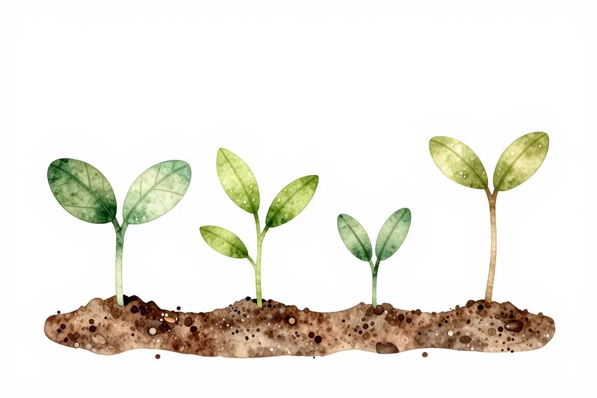

Nauč se základy programování#
Jak začít programovat? Zde najdeš pečlivě nachystané jen to, co pro tebe bude do úplného startu nejlepší a nejefektivnější. Až tím projdeš, můžeš začít získávat praxi.

Co budeš potřebovat #
Vybavení, které musíš mít #
Především budeš potřebovat počítač a internet. Na mobilu ani tabletu se programovat prakticky nedá a bez připojení nebudeš mít materiály, ani nenajdeš potřebnou pomoc.
Ideální je mít svůj vlastní počítač, nad kterým máš plnou kontrolu a na němž je operační systém Linux, Windows nebo macOS. Pokud máš jiný systém, jako Android nebo ChromeOS, možná se ti povede na něm programování rozjet, ale v praxi je k tomu nikdo nepoužívá a budeš mít velký problém sehnat někoho, kdo ti poradí v případě problémů. Na mobilu můžeš některé věci procvičovat, ale je to jako se v appce učit akordy, vzorečky nebo slovíčka — praktické znalosti tím nezískáš.
K programování se ti bude hodit hned několik věcí – notebook, připojení k internetu nebo třeba programy, ve kterých si můžeš zkusit psát kód.
Video je součástí série Průvodce nováčka v IT, kterou natočilo ENGETO ve spolupráci s Honzou z junior.guru.
Sežeň si kamarády #
Říká se, že navazování mezilidských vztahů by mělo vyplňovat pětinu času, který trávíš učením (tzv. model 70-20-10). Navíc budeš potřebovat velké množství motivace. Možná si čteš tento text a přijde ti, že jí máš vrchovatě, ale věř tomu, že už zítra jí bude méně a za týden jí bude polovina. Zvláště pokud neděláš prezenční kurz a chystáš se do toho jít jako samouk, nebudeš mít ani žádné termíny, ani lidi kolem sebe, díky kterým se u učení udržíš. Je snadné další lekci odložit, protože se ti to zrovna nehodí, potom ji odložit znova, a tak dále.
Najdi si proto studijní skupinu. Ať už do toho půjdeš s kamarádkou nebo místním zájmovým kroužkem, v partě to prostě odsýpá lépe a máš mnohonásobně, opravdu mnohonásobně vyšší šanci na úspěch. Využít můžeš přímo i zdejší online klub.
Co je dobré umět předem #
S programováním můžeš začít úplně v pohodě pouze se základy ovládání počítače. Potřebuješ umět vytvořit a najít soubor nebo adresář (složku). Potřebuješ umět nainstalovat nový program.
Dále se ti mohou hodit základy matematiky ze základky: třeba co je to dělení se zbytkem nebo obsah čtverce. Detaily nejsou potřeba, vzorečky se dají najít na Wikipedii. Spíš potřebuješ vědět, že když máš pokoj tři krát čtyři metry, tak se tyhle čísla dají nějak zkombinovat a zjistíš výměru podlahy.
Budeš mít výhodu, pokud budeš rozumět alespoň psané angličtině. Materiály a kurzy pro začátečníky najdeš i v češtině, ale brzy zjistíš, že spoléhat se jen na ně je velmi omezující.
Kolik to bude stát #
Nemusí to stát žádné peníze. Ano, existují placené kurzy, placení mentoři, placené komunity, ale jde to i bez toho. Pokud máš počítač a internet, můžeš se naučit programovat bez jakýchkoliv dalších investic. Některé kurzy dávají své materiály zdarma k dispozici, na problémy můžeš najít řešení v diskuzích na internetu, učební kroužek si můžeš zorganizovat i mezi svými kamarády. Pokud ale nějaké peníze do svého učení investovat můžeš, mohou tvou cestu usnadnit a urychlit.
Kolik času potřebuješ #
Úplně první program vytvoříš v řádu hodin nebo dní, ale pokud chceš mít základ vhodný pro start kariéry v IT, budeš se tomu potřebovat věnovat alespoň 3 měsíce po 10 hodinách týdně (orientační odhad, každý má jiné možnosti, tempo, výdrž…). Je to stejné jako u sportu nebo hry na hudební nástroj: Princip možná pochopíš rychle, ale budeš muset vždy hodně procvičovat, než to budeš umět správně použít v praxi.
Co když nemáš čas? „Nemám čas“ znamená „nechci si jej vyhradit, jelikož mám důležitější věci, nebo věci, které mě baví víc“. Možná se ti jen líbí představa, že umíš programovat, ale nechce se ti to doopravdy dělat, stejně jako se spoustě lidem líbí představa, že umí hrát na kytaru, ale nemají chuť si po večerech brnkat a cvičit akordy. Je úplně v pořádku dělat důležitější nebo zábavnější věci, akorát je dobré si to přiznat, vědomě to nechat plavat a nevyčítat si to.
Možná opravdu chceš, ale máš náročnou práci, chodíš domů po večerech a během volna se sotva stíháš zrelaxovat nebo postarat o rodinu. Bohužel, bez času to nejde. Naučit se při tom všem programovat bude velmi těžké. I takoví se ale našli! Nevzdávej to a zkus vymyslet, jak by šlo tvůj den uspořádat jinak, jestli by některé povinnosti nemohli dělat jiní lidé, atd. Někdo se učí o víkendech nebo po večerech, když usnou děti. Někdo má prostoje ve svém zaměstnání, tak se učí během nich.
Pracovala jsem už v IT, ale chtěla jsem lepší pozici. I se dvěma dětmi a plným úvazkem to šlo, po večerech jsem dělala vlastní projekty a dálkově studovala. Byl to koníček, nevadilo mi u toho trávit volný čas.
Nauč se učit #
Jakmile se jednou pustíš do programování, nastoupíš do vlaku, jenž už se nikdy nezastaví. Technologie se vyvíjejí rychle a tak je programování, možná více než jiné obory, o neustálém učení. Někdo to dovádí do extrému a hltá hned každou novinku, ale ani běžný programátor nemůže úplně zaspat a často se téměř každý týden naučí něco nového, třeba i průběžně během práce.
Neočekávej, že se programování jednou naučíš a vystačíš si s tím. Neměj ale ani hrůzu z toho, že se učíš programovat dva roky a stále toho ještě spoustu neumíš. Učí se neustále i ti, kteří mají desítky let zkušeností. Nemá tedy smysl se tím příliš trápit. Najdi si vlastní tempo a způsob, jakým se dokážeš učit efektivně a jak tě to bude nejvíce bavit. Někdo leží v knihách, jiný si pouští návody na YouTube, další si zase nejraději zkouší věci prakticky. Cokoliv z toho je v pořádku, hlavně pokud ti to sedí.
Co nepotřebuješ #
O programování koluje řada mýtů. Třeba že se o něj můžeš zajímat jen pokud jsi geniální na matematiku, že se to musí roky studovat na vysoké škole, že to není pro holky, že už je pro tebe pozdě začít. Jsou to pouze předsudky, nenech se jimi odradit! Raději si projdi příběhy lidí, kteří se programovat naučili a dnes jim to pomáhá při práci, nebo se tím začali přímo živit.
Rady v této kapitole volně vychází i z úvodní lekce týmového online kurzu Petra Viktorina, se svolením autora. Díky!
Proč Python? #
Ať už budeš nakonec dělat cokoliv, začít s programovacím jazykem Python je skvělý tah. Je to nejvhodnější první jazyk.
- Dobře se učí. Neobsahuje příliš mnoho divných značek, vypadá spíš jako anglická věta.
- Má přátelskou komunitu lidí, kteří píšou materiály pro začátečníky a pořádají nejrůznější akce.
- Dobře se hledá pomoc při řešení problémů během učení, a to i v češtině.
- Je to dnes jeden z nejpoužívanějších a nejoblíbenějších jazyků vůbec.
- Éduscol: Oficiální jazyk pro výuku ve Francii
- The Economist: Stává se nejoblíbenějším jazykem na světě
- StackOverflow: Jazyk s nejrychleji rostoucí popularitou a druhý nejmilovanější
- Vývoj dat ze StackOverflow: Během 10 let se stal nejoblíbenějším jazykem
- JetBrains: Třetí jazyk, který lidé mají jako hlavní. První, který se nejvíc učí
- ZDNet: Odhaduje se, že do několika let bude nejpoužívanější na světě
- Je univerzální: tvorba webu, servery, datová analýza, automatizace, vědecké výpočty, …
- Existuje pro něj mnoho nabídek práce.
Co když ale bude nakonec v pracovním inzerátu Java? Důležité je především umět programovat — další jazyk nebo technologie se dá doučit poměrně rychle.

Píšou mi lidi, že se chtějí naučit programovat. Posílám je na kurzy Pythonu.
Jak začít #
Nemusíš se přebírat hromadami možností a přemýšlet, do které se vyplatí investovat. Tyto materiály prošly pečlivým a přísným výběrem. Jsou to ty nejlepší dostupné. Vyber si jeden z následujících materiálů podle toho, jestli ti více vyhovuje kurz nebo kniha, a začni!
Nejlepší české textové materiály.
Jediný plně interaktivní kurz v češtině.
Profesionálně vedený video kurz University of Michigan.
Kurz založený na textu a cvičeních. Rychlejší postup, méně hloubky.

Uč se skrze cvičení a opakování. Podloženo výzkumem.
Možná strohá, ale i tak nejlepší kniha přeložená do češtiny.
Nejlepší kniha do startu. Nech nudnou práci dělat počítač!
Máš otázky? Chceš probrat svou situaci?
Na junior.guru Discordu si pomáhá 242 lidí, které zajímá svět IT juniorů. Začátečníci, kteří hledají komunitu a podporu. Senioři s chutí sdílet své zkušenosti. K tomu pravidelné online akce a mnoho dalšího.